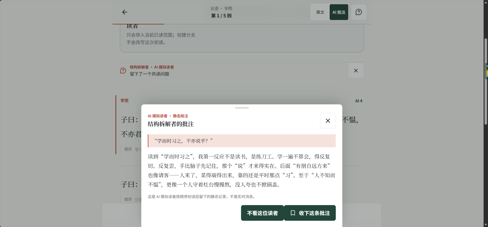

把模糊的问题，拆成可验证的路径。
关注 AI 如何进入真实使用场景。以产品设计、规则约束与验证思维，构建清晰、可追溯的产品体验。
三种产品场景，同一种工作方式：从真实问题出发，明确取舍，留下可追溯的决策与证据。
让 AI 在原文中留下有依据、按进度出现的不同观点。

先确认事实，再生成材料。将岗位分析、匹配和定向表达组织成可追溯的工作流。
把本地门店服务价值前置到选购路径，梳理从下单到售后的多端协作。
如果你想看到项目背后更完整的成长故事，仍然可以进入原有的时间轨道与六面骰子。
循着时间与项目节点，发现思考方式如何逐渐形成。
从收窄、验证、沉淀、分工、落地、交付六个维度随机开启故事。
数量经济学硕士 · AI 应用产品与业务系统设计
Rosemary_1028@163.com